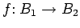
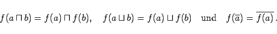
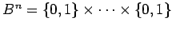
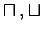
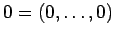
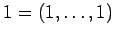
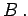
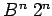

Inhalt Index DeskTop Bronstein

 Algebra und Diskrete Mathematik Boolesche Algebren und Schaltalgebra
Algebra und Diskrete Mathematik Boolesche Algebren und Schaltalgebra


Alle endlichen BOOLEschen Algebren lassen sich bis auf ,,Isomorphie`` einfach angeben. Es seien B1, B2 BOOLEsche Algebren und  eine bijektive Abbildung. f heißt Isomorphismus, falls gilt:
|  | (5.327) |
Jede endliche BOOLEsche Algebra ist isomorph zur BOOLEschen Algebra der Potenzmenge einer endlichen Menge. Insbesondere hat jede endliche BOOLEsche Algebra 2n Elemente, und je zwei endliche BOOLEsche Algebren mit gleich vielen Elementen sind isomorph.
Im folgenden wird mit B die zweielementige BOOLEsche Algebra { 0,1} mit den folgenden Operationen bezeichnet:
Erklärt man auf dem n-fachen kartesischen Produkt  die Operationen  und komponentenweise, so wird Bn mit  und  zu einer BOOLEschen Algebra. Man nennt Bn das n-fache direkte Produkt von  Da  Elemente enthält, erhält man auf diese Weise alle endlichen BOOLEschen Algebren (bis auf Isomorphie).